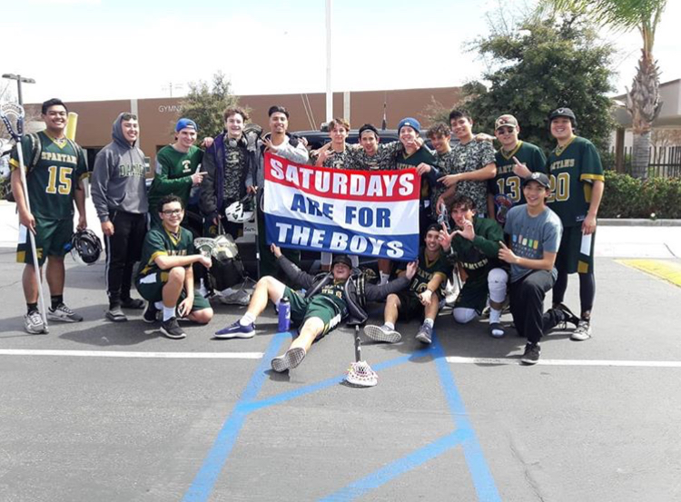
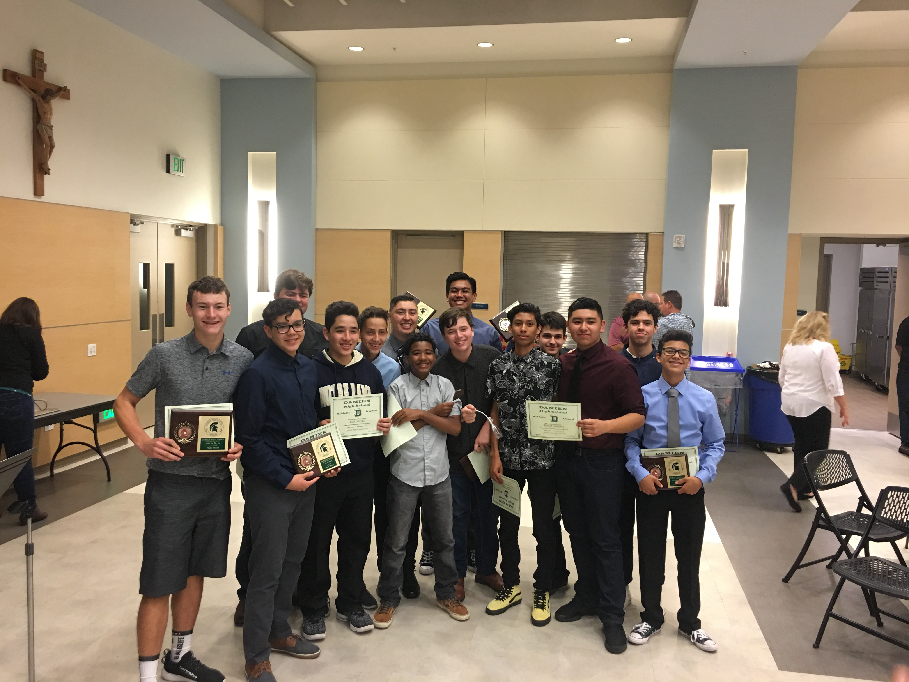

Damien High School Lacrosse was at an all time high last season, breaking several player records and team records. The team went from unranked to rank #47 in CIF Southern Section.
I love playing lacrosse here at Damien because it is a new fairly new program and representing Damien High School as we take new steps into this sport.
Click Here For Team Rosters and Top Seniors
Club Teams
There are many club teams in the U.S. who travel to far places. For example, Santa Monica Dragons (pictured above) is a team based in Santa Monica and we played in many different states for college tournaments.
In these college prospect tournaments, Teams battle it out against the TOP teams in the nation.
Playing for this team made me aware of how large this amazing sport is growing to be and how much this sport has grown attached to me
Major and National Teams
In the U.S. there are around 20 total lacrosse teams all around. From Denver, to Ohio, to New York, teams travel and compete for the title of top team. There are two styles of play that the professionals compete in; Box Lacrosse which has 11 teams and the traditional lacrosse on the turf with 9 teams.
Around the world, there are 34 full members in the Federation of International Lacrosse (FIL). Team Philipines was recently added and I enjoy watching their team play because I am Filipino as well and it makes me happy that the Philippines has a teaam for the sport I love.
Brandon Alan C. Tanjuaquio
Period 1